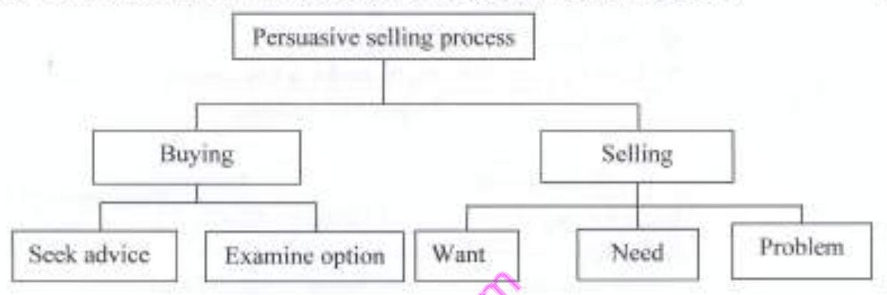

(a) (i) Open a word processing program and key in the following text as it appears. Save the document as Wprocessor in the KNECEXAM folder to print out later. (Marks implied)
WORD PROCESSOR
A word processor is a computer application used for production of printable material.
Some Wordprocessors usually feature a monochrome display and the ability to save documents on memory cards or CD ROMs. Other models have introduced innovations such as spell-checking programs, increased formatting options, and dot-matrix printing.
Word processing implies the presence of text manipulation functions that extend beyond a basic ability to enter and change text, such as automatic generation of:
batch mailings;
indices of keywords;
tables of contents;
tables of figures;
cross-referencing;
footnote numbering;
(ii) Insert a picture of a computer before the paragraph starting with "Word processing implies,.." (Mark implied)
(iii) Apply square wrap style to the picture inserted in (ii). (Mark implied)
(iv) Format the heading to:
font type: Comic Sans MS;
font of size: 16.
(v) Set the line spacing height in the document to 1.5. (Mark implied)
(vi) Save the changes in the document to print out later. (Mark implied)
(b) Christina, the company secretary, writes memos to the staff very often. She has requested you to prepare a memo template to be used within the college.
Open a word processing program and create the document template as it appears in Figure 1. Save the document as memotemplate in the KNECEXAM folder to print out later. (3 marks)
Figure 1
(c) The chairperson of sportlinks distributors intends to send letters to committee members informing them of his intended visit to their cities. He has requested you to use the mailmerge facility to prepare the letters.
(i) Open a word processing program and create a data source with the following information and save it as contactdata in the KNECEXAM folder. (Marks implied)
Contact Data Source
Title Name Company Address City Country Product
Mr Guy McFac Victory sports centre 23451 Nairobi Kenya Camping and adventure gear. Ms Jekia Neta Valley sports centre 89742 Dodoma Tanzania Camping gear Mr James Andaku Worldwide sports centre 89645 Kampala Uganda Outdoor cooking gear
(ii) Type the letter as it appears below and save it as maindoc in the KNECEXAM folder. (2 marks)
SPORTLink distributor
P. O BOX 67453-00200 NAIROBI
Dear,
<
> <<Name>></p>
<p><<Company>></p>
<p><<Address>></p>
<p><<City>></p>
<p><<Country>></p>
<br>
<p>I kindly inform you that we will be coming to your city <<City>> next month and we would like to show you our new <<Product>>.</p>
<br>
<p>Yours faithfully,</p>
<br>
<p>Daniell,</p>
<p>Chairman.</p>
</div>
<p>(iii) Merge the data source created in c (i) to the maindoc document created in (ii). (2 marks)</p>
<p>(iv) Save the merged document as letter in the KNECEXAM folder, to print out later, the following:</p>
<ol type="I">
<li>main doc;</li>
<li>letter.</li>
</ol>
</div>
<div class="answer-section">
<h4>Answer</h4>
<div class="answer-content">
<p><em>Disclaimer: Answers are AI-generated and may contain errors. Verify independently.</em></p>
<!-- Answer content not available -->
<p><strong>(a) Word Processing Document (Wprocessor):</strong></p>
<ol type="i">
<li>Open Microsoft Word.</li>
<li>Type the text provided under "WORD PROCESSOR".</li>
<li>Format the heading "WORD PROCESSOR" to Comic Sans MS, size 16.</li>
<li>Select all the body text and set line spacing to 1.5 (Paragraph settings).</li>
<li>Place the cursor before the paragraph "Word processing implies...". Insert a picture of a computer (Insert > Pictures > Online Pictures or Stock Images, search for "computer").</li>
<li>Select the inserted picture. Go to Picture Format > Wrap Text > Square. Adjust size/position if needed.</li>
<li>Save the document as `Wprocessor.docx` in the `KNECEXAM` folder.</li>
</ol>
<p><strong>(b) Memo Template (memotemplate):</strong></p>
<ol>
<li>Open a new Word document.</li>
<li>Recreate the layout shown in Figure 1. Use text boxes, lines, and placeholders (like "[Click here and type name]") to match the template structure. Pay attention to alignment and spacing.</li>
<li>Save the document as a Word Template (`.dotx`) named `memotemplate` in the `KNECEXAM` folder. (File > Save As > Browse > Save as type: Word Template).</li>
</ol>
<p><strong>(c) Mail Merge:</strong></p>
<ol type="i">
<li><strong>Data Source (contactdata):</strong>
<ul>
<li>Open a new Word document (or use Excel).</li>
<li>Create a table with the headers: Title, Name, Company, Address, City, Country, Product.</li>
<li>Enter the three records provided.</li>
<li>Save this file as `contactdata.docx` (or `.xlsx`) in the `KNECEXAM` folder.</li>
</ul>
</li>
<li><strong>Main Document (maindoc):</strong>
<ul>
<li>Open a new Word document.</li>
<li>Type the letter exactly as shown, including the placeholders like `<<Title>>`.</li>
<li>Save this file as `maindoc.docx` in the `KNECEXAM` folder.</li>
</ul>
</li>
<li><strong>Perform Merge:</strong>
<ul>
<li>Open `maindoc.docx`.</li>
<li>Go to the 'Mailings' tab.</li>
<li>Click 'Start Mail Merge' > 'Letters'.</li>
<li>Click 'Select Recipients' > 'Use an Existing List...'.</li>
<li>Browse to and select the `contactdata.docx` file saved earlier. Click Open.</li>
<li>Replace the typed placeholders (e.g., `<<Title>>`) with merge fields: Place cursor where the field should go, click 'Insert Merge Field' on the Mailings tab, and select the corresponding field (e.g., Title). Repeat for all placeholders.</li>
<li>Preview the results using 'Preview Results' on the Mailings tab to check the first letter.</li>
</ul>
</li>
<li><strong>Save Merged Letters (letter):</strong>
<ul>
<li>On the 'Mailings' tab, click 'Finish & Merge' > 'Edit Individual Documents...'.</li>
<li>Select 'All' and click OK. A new document (`Letters1` or similar) will open containing the three merged letters.</li>
<li>Save this new document as `letter.docx` in the `KNECEXAM` folder.</li>
</ul>
</li>
<li>Prepare `maindoc.docx` and `letter.docx` for printing.</li>
</ol>
</div>
</div>
</div>
<!-- Task 2 -->
<div class="question" id="question-2">
<h3>Task 2 (20 marks)</h3>
<div class="question-content">
<p>Figure 2 shows a Spreadsheet extract of the daily sales of Superior Stationery Limited. Use it to answer the questions that follow.</p>
<p>(a) (i) Open a spreadsheet program and key in the data in sheet 1 as it appears. Save the workbook as Statltd in the KNECEXAM folder. (2.5 marks)</p>
<table class="data-table">
<caption>Figure 2: Superior Stationery Limited Sales Data (Sheet1)</caption>
<thead>
<tr><th></th><th>A</th><th>B</th><th>C</th><th>D</th><th>E</th><th>F</th><th>G</th><th>H</th><th>I</th></tr>
</thead>
<tbody>
<tr><td>1</td><td>Items</td><td>Quantity</td><td>Buying Price per item in Ksh</td><td>Total cost</td><td>Selling Price per item in Ksh</td><td>Quantity sold</td><td>Total sales</td><td>New prices</td><td>Remarks</td></tr>
<tr><td>2</td><td>PVC Spring Files</td><td>445</td><td>100</td><td></td><td>120</td><td>138</td><td></td><td></td><td></td></tr>
<tr><td>3</td><td>Hardcover Notebooks</td><td>330</td><td>48</td><td></td><td>62</td><td>121</td><td></td><td></td><td></td></tr>
<tr><td>4</td><td>Clipboards</td><td>198</td><td>70</td><td></td><td>85</td><td>120</td><td></td><td></td><td></td></tr>
<tr><td>5</td><td>Reams of Photocopy Papers</td><td>375</td><td>550</td><td></td><td>580</td><td>166</td><td></td><td></td><td></td></tr>
<tr><td>6</td><td>200pg Exercise Book</td><td>466</td><td>28</td><td></td><td>40</td><td>140</td><td></td><td></td><td></td></tr>
<tr><td>7</td><td>Geometrical Sets</td><td>126</td><td>185</td><td></td><td>225</td><td>100</td><td></td><td></td><td></td></tr>
<tr><td>8</td><td>Totals</td><td></td><td></td><td></td><td></td><td></td><td></td><td></td><td></td></tr>
<tr><td>9</td><td></td><td></td><td></td><td></td><td></td><td></td><td></td><td></td><td></td></tr>
<tr><td>10</td><td></td><td>0.06</td><td></td><td></td><td></td><td></td><td></td><td></td><td></td></tr>
</tbody>
</table>
<p>(ii) I. Insert a row above Row 1. (0.5 mark)</p>
<p>II. merge the cells A1:I1. (0.5 mark)</p>
<p>III. Insert the title SUPERIOR STATIONERY LIMITED and centre it in the row created in I. (0.5 mark)</p>
<p>IV Format the title to: Font: Comic Sans MS, Size: 14 (1 mark)</p>
<p>(b) (i) Using a function and cell references only, calculate the total cost for each item. (2.5 mark)</p>
<p>(ii) Set the font colour for total cost column to grey. (0.5 mark)</p>
<p>(c) (i) Using a formula and cell references only, calculate the total sales for each of the quantities sold. (2.5 mark)</p>
<p>(ii) Apply the text wrap feature on the range A2:A7 (Original row numbers, adjust after row insertion). (Mark implied)</p>
<p>(iii) Apply the Ksh currency format to all the cells showing amounts. (Mark implied)</p>
<p>(d) (i) Insert an embedded 3D clustered column chart showing Total sales and Total cost. (1 mark)</p>
<p>(ii) Copy the chart created in (i) to sheet 2 and rename it as dailychart. (0.5 mark)</p>
<p>(e) Suppose the price of the items in the company went up by 6%:</p>
<p>(i) Use the absolute cell referencing and the value in cell B10 (Original row number, adjust after row insertion) to determine the new prices of each item. (2 marks)</p>
<p>(ii) Format the new prices to two decimal places. (0.5 mark)</p>
<p>(f) The management recommends that when the stock falls below 150, a remark of reorder be assigned. If the stock exceeds 400, a remark of excess is assigned otherwise a remark of ideal is assigned. (Assume stock refers to original Quantity in column B)</p>
<p>(i) Copy the content in Sheet 1 to Sheet 3. (Mark implied)</p>
<p>(ii) Using an appropriate function, determine the remark for each item. (Marks implied)</p>
<p>(iii) Rename sheet 3 as stockposition. (Mark implied)</p>
<p>(g) Printout later: I. Sheet 1; II. dailychart; III. stockposition (Marks implied)</p>
</div>
<div class="answer-section">
<h4>Answer</h4>
<div class="answer-content">
<p><em>Disclaimer: Answers are AI-generated and may contain errors. Verify independently.</em></p>
<!-- Answer content not available -->
<p><strong>(a) Data Entry and Formatting:</strong></p>
<ol type="i">
<li>Open Microsoft Excel.</li>
<li>Enter the data from Figure 2 into Sheet1, starting from cell A1. Note the 6% value (0.06) is in B10 initially.</li>
<li><strong>Insert Row & Title:</strong> Select Row 1, right-click > Insert. In the new Row 1, select cells A1:I1, click 'Merge & Center'. Type "SUPERIOR STATIONERY LIMITED".</li>
<li>Format the title in A1: Font Comic Sans MS, Size 14.</li>
<li>Save the workbook as `Statltd.xlsx` in the `KNECEXAM` folder.</li>
<li>*Note: All original row numbers mentioned in the question are now increased by 1 due to the inserted row. E.g., original A2:A7 is now A3:A8, B10 is now B11.*</li>
</ol>
<p><strong>(b) Total Cost:</strong></p>
<ol type="i">
<li>In cell D3 (Total Cost for PVC Spring Files), enter the formula: `=B3*C3`.</li>
<li>Drag the fill handle down from D3 to D8 to calculate for all items.</li>
<li>Select the range D3:D8. Change the font color to Grey (Home tab > Font Color).</li>
</ol>
<p><strong>(c) Total Sales & Formatting:</strong></p>
<ol type="i">
<li>In cell G3 (Total Sales for PVC Spring Files), enter the formula: `=E3*F3`.</li>
<li>Drag the fill handle down from G3 to G8.</li>
<li>Select the range A3:A8. Go to Home tab > Alignment group > Click 'Wrap Text'. Adjust row heights if necessary.</li>
<li>Select all cells containing monetary values (C3:E8, G3:G8, H3:H8 - H column will be calculated later). Right-click > Format Cells > Currency > Symbol: Ksh, Decimal places: 2. Click OK.</li>
</ol>
<p><strong>(d) Chart:</strong></p>
<ol type="i">
<li>Select the range containing item names (A3:A8). Hold Ctrl and select the Total Cost range (D3:D8) and the Total Sales range (G3:G8).</li>
<li>Go to Insert > Charts > Column > 3-D Clustered Column.</li>
<li>Position the chart within Sheet1.</li>
<li>Right-click the chart > Move Chart > New sheet > Name it `dailychart`. Click OK. (Alternatively, Copy the chart, go to Sheet2, Paste, then rename Sheet2 to `dailychart`).</li>
</ol>
<p><strong>(e) New Prices:</strong></p>
<ol type="i">
<li>In cell H3 (New prices for PVC Spring Files), enter the formula: `=E3*(1+$B$11)`. The `$B$11` creates an absolute reference to the 6% increase value.</li>
<li>Drag the fill handle down from H3 to H8.</li>
<li>Ensure the cells H3:H8 are formatted as Ksh Currency with 2 decimal places (done in step c.iii).</li>
</ol>
<p><strong>(f) Stock Position Remarks:</strong></p>
<ol type="i">
<li>Right-click the Sheet1 tab > Move or Copy... > Select '(move to end)' > Check 'Create a copy' > Click OK.</li>
<li>Rename the new sheet (Sheet1 (2)) to `stockposition`.</li>
<li>In the `stockposition` sheet, go to cell I3 (Remarks for PVC Spring Files). Enter the formula: `=IF(B3<150,"reorder",IF(B3>400,"excess","ideal"))`.</li>
<li>Drag the fill handle down from I3 to I8.</li>
</ol>
<p><strong>(g) Printing:</strong></p>
<ol>
<li>Save the `Statltd.xlsx` workbook.</li>
<li>Go to Sheet1, File > Print.</li>
<li>Go to the `dailychart` sheet, File > Print.</li>
<li>Go to the `stockposition` sheet, File > Print.</li>
</ol>
</div>
</div>
</div>
<!-- Task 3 -->
<div class="question" id="question-3">
<h3>Task 3 (20 marks)</h3>
<div class="question-content">
<p>Navok hospital is a recently established mission hospital offering consultation and pharmaceutical services. The hospital administration has requested you to assist in developing a database to store their records.</p>
<p>(a) Open a database program and create a database named navok and save it in the KNECEXAM folder. (0.5 mark)</p>
<p>(b) Create the following tables for the database created in (a) and include an appropriate primary key for each table. (8 marks)</p>
<p><strong>Doctors Data</strong></p>
<table class="data-table">
<thead><tr><th>Field Name</th><th>Data Type</th><th>Field Size</th></tr></thead>
<tbody>
<tr><td>DoctorID</td><td>Text</td><td>15</td></tr>
<tr><td>DoctorName</td><td>Text</td><td>25</td></tr>
<tr><td>DoctorSpeciality</td><td>Text</td><td>50</td></tr>
</tbody>
</table>
<p><strong>Patient Data</strong></p>
<table class="data-table">
<thead><tr><th>Field Name</th><th>Data Type</th><th>Field Size</th></tr></thead>
<tbody>
<tr><td>PatientID</td><td>Text</td><td>15</td></tr>
<tr><td>PatientName</td><td>Text</td><td>25</td></tr>
<tr><td>PatientAge</td><td>Number</td><td>Integer</td></tr>
<tr><td>PatientGender</td><td>Text</td><td>10</td></tr>
</tbody>
</table>
<p><strong>Drug Data</strong></p>
<table class="data-table">
<thead><tr><th>Field Name</th><th>Data Type</th><th>Field Size</th><th>Properties</th></tr></thead>
<tbody>
<tr><td>DrugID</td><td>Text</td><td>15</td><td></td></tr>
<tr><td>DrugName</td><td>Text</td><td>50</td><td></td></tr>
<tr><td>Packaging</td><td>Text</td><td>50</td><td></td></tr>
<tr><td>Price</td><td>Text</td><td>10</td><td>Default Value = "ksh"</td></tr>
<tr><td>Quantity</td><td>Number</td><td>Integer</td><td></td></tr>
</tbody>
</table>
<p><strong>Patient Visitation</strong></p>
<table class="data-table">
<thead><tr><th>Field Name</th><th>Data Type</th><th>Field Size</th><th>Properties</th></tr></thead>
<tbody>
<tr><td>VisitationDate</td><td>Date</td><td></td><td></td></tr>
<tr><td>PatientID</td><td>Text</td><td>15</td><td></td></tr>
<tr><td>PatientName</td><td>Text</td><td>25</td><td>Use the lookup wizard to get the data from patient details table</td></tr>
<tr><td>DoctorID</td><td>Text</td><td>15</td><td>Use the lookup wizard to get the data from doctor details table</td></tr>
<tr><td>DrugID</td><td>Text</td><td>15</td><td></td></tr>
<tr><td>Cost</td><td>Text</td><td>10</td><td>Default Value = "ksh"</td></tr>
<tr><td>NextVisitation</td><td>Date</td><td></td><td></td></tr>
</tbody>
</table>
<p>(c) (i) Create appropriate relationships among the tables. (2 marks)</p>
<p>(ii) For each of the tables, create a data entry form named DoctorData, PatientData, DrugData and PatientVisitation respectively. (Marks implied)</p>
<p>(iii) Using the forms created in (ii), enter the following data into the respective tables. (4 marks)</p>
<p><strong>Doctors Details</strong></p>
<table class="data-table">
<thead><tr><th>DoctorID</th><th>DoctorName</th><th>Doctor Specialty</th></tr></thead>
<tbody>
<tr><td>GNT/023</td><td>Dr. Marvin</td><td>Gynecologist</td></tr>
<tr><td>HPR/411</td><td>Dr. Bora</td><td>Physician</td></tr>
<tr><td>RMT/175</td><td>Dr. Huri</td><td>Dentist</td></tr>
<tr><td>PST/223</td><td>Dr. Paul</td><td>Surgeon</td></tr>
</tbody>
</table>
<p><strong>Patient's Details</strong></p>
<table class="data-table">
<thead><tr><th>PatientID</th><th>PatientName</th><th>PatientAge</th><th>Patient Gender</th></tr></thead>
<tbody>
<tr><td>GTP/101</td><td>James David</td><td>32</td><td>M</td></tr>
<tr><td>GTP/103</td><td>Peter Almond</td><td>36</td><td>M</td></tr>
<tr><td>GTP/105</td><td>Joy Frida</td><td>25</td><td>F</td></tr>
<tr><td>GTP/107</td><td>Leslie Magut</td><td>43</td><td>F</td></tr>
</tbody>
</table>
<p><strong>Drug Details</strong></p>
<table class="data-table">
<thead><tr><th>DrugID</th><th>DrugName</th><th>Packaging</th><th>Price</th><th>Quantity</th></tr></thead>
<tbody>
<tr><td>1013/2012</td><td>Penicillin</td><td>Tablets</td><td>450</td><td>200</td></tr>
<tr><td>1134/2012</td><td>Mouthwash</td><td>Bottles</td><td>700</td><td>50</td></tr>
<tr><td>1234/2012</td><td>Amoxil Tabs</td><td>Tablets</td><td>100</td><td>156</td></tr>
<tr><td>1367/2012</td><td>Ventolin</td><td>Cannisters</td><td>234</td><td>73</td></tr>
<tr><td>1369/2012</td><td>Morphine</td><td>Tablets</td><td>1000</td><td>346</td></tr>
<tr><td>1135/2012</td><td>Folic Acid Tabs</td><td>Tablets</td><td>400</td><td>98</td></tr>
<tr><td>1009/2012</td><td>Nasal Drops</td><td>Bottles</td><td>980</td><td>57</td></tr>
<tr><td>1238/2012</td><td>Paracetamol</td><td>Tablets</td><td>25</td><td>558</td></tr>
</tbody>
</table>
<p><strong>PatientVisitation</strong></p>
<table class="data-table">
<thead><tr><th>Date</th><th>PatientID</th><th>PatientName</th><th>DoctorID</th><th>DrugID</th><th>Cost</th><th>NextVisitation</th></tr></thead>
<tbody>
<tr><td>01/11/2012</td><td>GTP/103</td><td>Peter Almond</td><td>HPR/411</td><td>1009/2012</td><td>965</td><td>01/01/2013</td></tr>
<tr><td>15/12/2012</td><td>GTP/105</td><td>Joy Frida</td><td>RMT/175</td><td>1234/2012</td><td>1205</td><td>15/01/2013</td></tr>
<tr><td>21/12/2012</td><td>GTP/101</td><td>James David</td><td>HPR/411</td><td>1367/2012</td><td>1060</td><td>10/02/2013</td></tr>
<tr><td>16/01/2013</td><td>GTP/107</td><td>Leslie Magut</td><td>GNT/023</td><td>1013/2012</td><td>1375</td><td>15/02/2013</td> <!-- Note: DrugID corrected from 1013/201 -->
</tbody>
</table>
<p>(d) (i) Create a query named PVisitationQuery to display: PatientID, PatientName, drugname and the DoctorID. (Marks implied)</p>
<p>(ii) Create a query named DrugQuery to display Drugname, cost and quantity. (Marks implied)</p>
<p>(e) Create a report named drugreport to display, drugname, and price. (Marks implied)</p>
<p>(f) Print out later: (i) PatientVisitationQuery; (ii) DrugQuery; (iii) drugreport. (Marks implied)</p> <!-- Note: Question asks for Patient Report, but (e) asks for drugreport -->
</div>
<div class="answer-section">
<h4>Answer</h4>
<div class="answer-content">
<p><em>Disclaimer: Answers are AI-generated and may contain errors. Verify independently.</em></p>
<!-- Answer content not available -->
<p><strong>(a) Create Database:</strong></p>
<ol>
<li>Open Microsoft Access.</li>
<li>Create a new Blank Database.</li>
<li>Save it as `navok.accdb` in the `KNECEXAM` folder.</li>
</ol>
<p><strong>(b) Create Tables:</strong></p>
<ol>
<li><strong>Doctors Data Table:</strong>
<ul>
<li>Create tab > Table Design.</li>
<li>Fields: DoctorID (Text, 15, Primary Key), DoctorName (Text, 25), DoctorSpeciality (Text, 50).</li>
<li>Save as `Doctors Data`.</li>
</ul>
</li>
<li><strong>Patient Data Table:</strong>
<ul>
<li>Create tab > Table Design.</li>
<li>Fields: PatientID (Text, 15, Primary Key), PatientName (Text, 25), PatientAge (Number, Integer), PatientGender (Text, 10).</li>
<li>Save as `Patient Data`.</li>
</ul>
</li>
<li><strong>Drug Data Table:</strong>
<ul>
<li>Create tab > Table Design.</li>
<li>Fields: DrugID (Text, 15, Primary Key), DrugName (Text, 50), Packaging (Text, 50), Price (Text, 10, Default Value: "ksh"), Quantity (Number, Integer).</li>
<li>Save as `Drug Data`.</li>
</ul>
</li>
<li><strong>Patient Visitation Table:</strong>
<ul>
<li>Create tab > Table Design.</li>
<li>Fields: VisitationID (AutoNumber, Primary Key - *Implied need for a unique key*), VisitationDate (Date/Time), PatientID (Text, 15), PatientName (Text, 25 - *Setup Lookup later*), DoctorID (Text, 15 - *Setup Lookup later*), DrugID (Text, 15), Cost (Text, 10, Default Value: "ksh"), NextVisitation (Date/Time).</li>
<li><strong>Lookup Fields:</strong>
<ul>
<li>For PatientName: Select 'Lookup Wizard...' in Data Type. Choose 'I want the lookup field to get the values from another table...'. Select 'Patient Data' table. Select 'PatientID' and 'PatientName'. Sort by 'PatientName'. Adjust column width. Enable Data Integrity. Finish.</li>
<li>For DoctorID: Select 'Lookup Wizard...'. Choose 'I want the lookup field...'. Select 'Doctors Data' table. Select 'DoctorID' and 'DoctorName'. Sort by 'DoctorName'. Enable Data Integrity. Finish.</li>
</ul>
</li>
<li>Save as `Patient Visitation`.</li>
</ul>
</li>
</ol>
<p><strong>(c) Relationships, Forms, Data Entry:</strong></p>
<ol type="i">
<li><strong>Relationships:</strong>
<ul>
<li>Go to Database Tools > Relationships.</li>
<li>Add all four tables.</li>
<li>Drag `PatientID` from `Patient Data` to `PatientID` in `Patient Visitation`. Enforce Referential Integrity. Create.</li>
<li>Drag `DoctorID` from `Doctors Data` to `DoctorID` in `Patient Visitation`. Enforce Referential Integrity. Create.</li>
<li>Drag `DrugID` from `Drug Data` to `DrugID` in `Patient Visitation`. Enforce Referential Integrity. Create.</li>
<li>Close and save the layout.</li>
</ul>
</li>
<li><strong>Create Forms:</strong>
<ul>
<li>Select `Doctors Data` table > Create tab > Form. Save as `DoctorData`.</li>
<li>Select `Patient Data` table > Create tab > Form. Save as `PatientData`.</li>
<li>Select `Drug Data` table > Create tab > Form. Save as `DrugData`.</li>
<li>Select `Patient Visitation` table > Create tab > Form. Save as `PatientVisitation`.</li>
</ul>
</li>
<li><strong>Enter Data:</strong>
<ul>
<li>Open each form (`DoctorData`, `PatientData`, `DrugData`, `PatientVisitation`) and enter the corresponding data provided in the question. Use the dropdowns created by the lookup wizard in the `PatientVisitation` form. Correct the typo in the last DrugID entry (should be 1013/2012).</li>
</ul>
</li>
</ol>
<p><strong>(d) Queries:</strong></p>
<ol type="i">
<li><strong>PVisitationQuery:</strong>
<ul>
<li>Create tab > Query Design.</li>
<li>Add `Patient Visitation`, `Patient Data`, `Drug Data`, `Doctors Data` tables (relationships should link them).</li>
<li>From `Patient Visitation`, add `PatientID`.</li>
<li>From `Patient Data`, add `PatientName`.</li>
<li>From `Drug Data`, add `DrugName`.</li>
<li>From `Doctors Data`, add `DoctorID`.</li>
<li>Run the query to check. Save as `PVisitationQuery`.</li>
</ul>
</li>
<li><strong>DrugQuery:</strong>
<ul>
<li>Create tab > Query Design.</li>
<li>Add `Drug Data` table.</li>
<li>Add `DrugName`, `Price` (from Drug Data), `Quantity`.</li> <!-- Assuming 'cost' meant 'Price' from Drug Data -->
<li>Run the query. Save as `DrugQuery`.</li>
</ul>
</li>
</ol>
<p><strong>(e) Report:</strong></p>
<ol>
<li>Select `Drug Data` table (or `DrugQuery` if Price is needed).</li>
<li>Create tab > Report.</li>
<li>In Design View, remove unnecessary fields, keeping only `DrugName` and `Price`. Adjust layout.</li>
<li>Save the report as `drugreport`.</li>
</ol>
<p><strong>(f) Printing:</strong></p>
<ol>
<li>Open `PVisitationQuery`, `DrugQuery`, and `drugreport`.</li>
<li>Go to File > Print for each object.</li>
</ol>
</div>
</div>
</div>
<!-- Task 4 -->
<div class="question" id="question-4">
<h3>Task 4 (20 marks)</h3>
<div class="question-content">
<p>(a) Hudson the marketing manager of Urembo cosmetics intends to use a presentation program during a workshop. He has requested you to assist him prepare the presentation slides as shown in Table 1.</p>
<p>(i) Open a presentation program and create the slides. Use an appropriate slide layout for each slide. (9 marks)</p>
<table class="data-table">
<caption>Table 1: Presentation Outline</caption>
<thead><tr><th>Slide</th><th>Slide content</th></tr></thead>
<tbody>
<tr><td>1</td><td>MARKETING WORKSHOP</td></tr>
<tr><td>2</td><td>Workshop objectives<br>At the end of the workshop:<br><ul><li>Provide knowledge and skills needed in marketing</li><li>Practice effective selling skills</li><li>Build a plan for you to make a successful sales call</li></ul></td></tr>
<tr><td>3</td><td>Types of selling<br><table class="inner-table"><tr><td>Traditional</td><td>Persuasive</td></tr><tr><td>Deal focus</td><td>Strategy focus</td></tr><tr><td>Inflexible</td><td>Short and long term</td></tr><tr><td>"what you need is"</td><td>"what do you need"</td></tr><tr><td>Manipulative</td><td>Motivational</td></tr></table></td></tr>
<tr><td>4</td><td>Presentation tools<br><table class="inner-table"><tr><td>Materials</td><td>Presenter</td></tr></table></td></tr>
<tr><td>5</td><td>Persuasive selling process</td></tr>
<tr><td>6</td><td>Planning and preparation<br><ul><li>Before making a call</li><li>Formulating Smart objective</li><li>Preparing a schedule</li><li>Preparing an open questions list</li><li>Preparing the presentation</li></ul></td></tr>
<tr><td>7</td><td>Just before the call<br><ol type="i"><li>Check meeting time</li><li>Agenda</li><li>Samples</li><li>Appearance</li><li>Contacts name</li><li>Objectives</li></ol></td></tr>
<tr><td>8</td><td>Evaluation</td></tr>
</tbody>
</table>
<p>(ii) Save the presentation as workshop in the KNECEXAM folder. (Mark implied)</p>
<p>(b) Create the following diagram in slide 5 to show the persuasive selling process. (Marks implied)</p>
<figure class="question-figure">

<figcaption>Persuasive Selling Process</figcaption>
</figure>
<p>(c) Insert the following to all slides:</p>
<p>(i) Footer : "Marketing Workshop";</p>
<p>(ii) slide number. (1 mark)</p>
<p>(d) Apply the following transition properties to all slides:</p>
<p>(i) transition : Wipe; (Corrected from Wide)</p>
<p>(ii) speed : slow. (1 mark)</p>
<p>(e) (i) After the workshop the manager evaluated his audience on different skills learnt and the results are shown in Table 2. Insert the table in slide 8. (2 marks)</p>
<table class="data-table">
<caption>Table 2: Evaluation Results</caption>
<thead>
<tr><th>Evaluation</th><th>Setting objective</th><th>Planning and preparation</th><th>Presentation skills</th><th>Close and order</th><th>Total</th></tr>
</thead>
<tbody>
<tr><td>Group 1</td><td>45</td><td>43</td><td>46</td><td>42</td><td></td></tr>
<tr><td>Group 2</td><td>48</td><td>42</td><td>45</td><td>43</td><td></td></tr>
<tr><td>Group 3</td><td>40</td><td>44</td><td>45</td><td>43</td><td></td></tr>
<tr><td>Group 4</td><td>42</td><td>45</td><td>46</td><td>41</td><td></td></tr>
</tbody>
</table>
<p>(ii) Save the changes to print out later the hand-outs with the following features: 4 slides per page, Landscape page orientation. (Marks implied)</p>
</div>
<div class="answer-section">
<h4>Answer</h4>
<div class="answer-content">
<p><em>Disclaimer: Answers are AI-generated and may contain errors. Verify independently.</em></p>
<!-- Answer content not available -->
<p><strong>(a) Create Presentation:</strong></p>
<ol type="i">
<li>Open Microsoft PowerPoint.</li>
<li><strong>Slide 1:</strong> Title Slide layout. Title: MARKETING WORKSHOP.</li>
<li><strong>Slide 2:</strong> Title and Content layout. Title: Workshop objectives. Bullet points as listed.</li>
<li><strong>Slide 3:</strong> Title and Content layout. Title: Types of selling. Insert a 2-column, 5-row table and enter the data.</li>
<li><strong>Slide 4:</strong> Title and Content layout. Title: Presentation tools. Insert a 2-column, 1-row table and enter "Materials" and "Presenter".</li>
<li><strong>Slide 5:</strong> Title Only layout (or Title and Content, delete content placeholder). Title: Persuasive selling process. (Diagram added in part b).</li>
<li><strong>Slide 6:</strong> Title and Content layout. Title: Planning and preparation. Bullet points as listed.</li>
<li><strong>Slide 7:</strong> Title and Content layout. Title: Just before the call. Numbered list (i, ii, iii...) as listed.</li>
<li><strong>Slide 8:</strong> Title Only layout (or Title and Content, delete content placeholder). Title: Evaluation. (Table added in part e).</li>
<li>Save the presentation as `workshop.pptx` in the `KNECEXAM` folder.</li>
</ol>
<p><strong>(b) Insert Diagram (Slide 5):</strong></p>
<ol>
<li>Go to Slide 5.</li>
<li>Insert > SmartArt > Process > Choose a suitable process flow diagram (e.g., Basic Process).</li>
<li>Enter the steps from the figure: "Opening", "Probing", "Supporting", "Closing". Add shapes as needed.</li>
<li>Alternatively, use Shapes (Insert > Shapes) to draw the boxes and arrows manually to match the figure exactly.</li>
</ol>
<p><strong>(c) Footer and Slide Numbers:</strong></p>
<ol type="i">
<li>Go to Insert > Header & Footer.</li>
<li>Check 'Slide number'.</li>
<li>Check 'Footer' and type "Marketing Workshop".</li>
<li>Click 'Apply to All'.</li>
</ol>
<p><strong>(d) Transitions:</strong></p>
<ol type="i">
<li>Go to the 'Transitions' tab.</li>
<li>Select the 'Wipe' transition from the gallery.</li>
<li>In the 'Timing' group, set Duration to a slower speed (e.g., 2.00 seconds or more, depending on PowerPoint version options for "Slow").</li>
<li>Click 'Apply To All'.</li>
</ol>
<p><strong>(e) Insert Table (Slide 8) and Print Settings:</strong></p>
<ol type="i">
<li>Go to Slide 8 ('Evaluation').</li>
<li>Insert > Table. Specify 6 columns and 5 rows.</li>
<li>Enter the data from Table 2. Add the title "Evaluation" spanning the top row (Merge cells).</li>
<li>Save the presentation (`workshop.pptx`).</li>
<li>Go to File > Print.
<ul>
<li>Under Settings > Print Layout, select '4 Slides Horizontal' (Handouts).</li>
<li>Under Settings > Orientation, select 'Landscape Orientation'.</li>
</ul>
</li>
<li>Click Print (or prepare for printing).</li>
</ol>
</div>
</div>
</div>
</section>
<div class="paper-navigation bottom" id="nav-bottom">
<a href="2011j.html" class="btn">Previous Paper (July 2011)</a>
<a href="index.html" class="btn">Home</a>
<a href="2014nov.html" class="btn">Next Paper (Nov 2014)</a>
</div>
</main>
</div>
<footer>
<div class="container">
<p>© 2025 Subject Past Papers Collection | Kenya National Examinations Council</p>
</div>
</footer>
</body>
</html>]]>